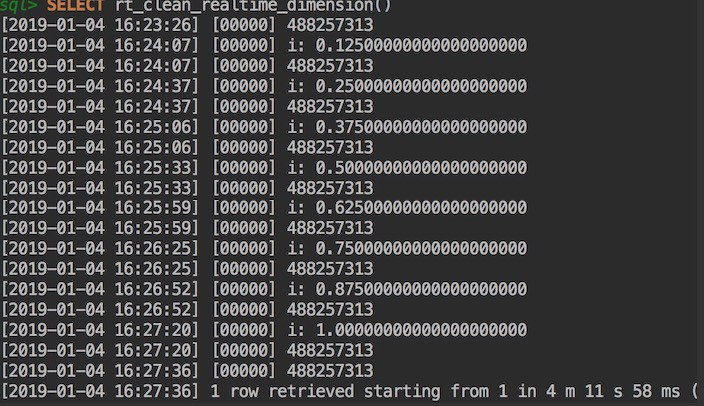

事情背景
事情起源于最近需要对数据库的部分数据进行清洗工作，由于 pg 存储过程比较强大，所以采用编写 pg 存储过程来实现数据清洗与迁移。
但是对于 pg 存储过程的事务管理等情况，并不是很明确。比如：
- 执行时间过长，会不会在处理过程中 block pg 其他操作
- 执行中，其他的 pg 操作会不会对当前的存储过程造成影响
部分说明
- pg 版本 9.5
- pg 9.5 版本的存储过程，准确来说是一个函数。在函数里的数据操作：update、delete… 等，并不是执行一次，就提交一次（也是这次测试需要验证的结论）。
- pg 11 里有可以单词控制事务提交的存储过程
实际测试过程以及具体情况
- 数据清洗脚本 ——— 一个典型的存储过程，整个执行时间大概4min。 中间涉及到数据表操作有： 删除、插入新数据、更新数据、查询等。 跨表数个。
- 执行工具： datagrip 的 console
- 数据库: pg 9.5
步骤：
准备好存储过程。
在存储过程执行前。 执行中：包括对数据进行的各操作。 执行完成后。加入打印当前事务的事务id。从而判断整个过程是否在同一个事务里:
1
RAISE NOTICE '%', txid_current();
伪代码如下(无法直接执行，涉及到项目数据，进行伪代码描述)：
1
2
3
4
5
6
7
8
9
10
11
12
13
14
15
16
17
18
19
20
21
22
23
24
25
26
27
28
29
30
31
32CREATE OR REPLACE FUNCTION transaction_test()
RETURNS text AS
$$
DECLARE
some_var text;
update_sql text;
delete_sql text;
rec RECORD;
-- add other def
BEGIN
-- here begin the function
-- init
some_var := 'some_var';
update_sql := 'UPDATE a SET b = c WHERE a.d = e'
delete_sql := 'DELETE FROM a WHERE b = f'
-- print the 'transaction id' before data process
RAISE NOTICE '%', txid_current();
-- data process
FOR rec in SELECT * FROM a LOOP
PERFORM update_sql;
PERFORM delete_sql;
-- print the 'transaction id' in data process
RAISE NOTICE '%', txid_current();
END LOOP;
-- print the 'transaction id' after data process
RAISE NOTICE '%', txid_current();
RETURNS 'ok';
END;
$$ LANGUAGE 'plpgsql';
实践
开两个窗口 A 和 B, 在 A 中查看会被改动表的数据。并且在存储过程执行中，多次查询该表状态。 侧面验证在存储过程执行时，不会对现有的 pg 业务造成影响：
- 不会 block 其他操作
- 不会查询到本应该在处理函数执行完之后才会有的结果。
在 B 中执行函数, 开始数据处理：
1
SELECT transaction_test();
回窗口 A 查看数据库状态
回到 B 窗口，等待执行完毕。 查看打印日志。显然，事务 id 一直是同一个:

显然，打印的事务 id 一直是同一个。
总结
综上描述， pg 存储过程的整个执行， 是在一个事务里进行的。而且， 在执行过程中，对表的增删改查， 都不会影响其他 session 对表的使用。
至于说，这个事务是怎么管理的。有资料表明，所有的 pg 函数以及触发器执行都是包含在一个外层查询建立的事务中。 所以, 对于函数提本体来说，是在同一个事务中了。当然，有异常处理等情况， 是有次级事务管理。 不在当前讨论范围。